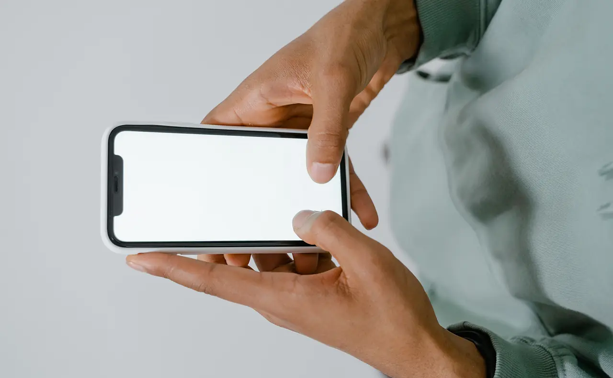

Website
Thiết kế website chuẩn mobile: responsive, vùng chạm, chữ, form, nút Zalo và tốc độ trên 4G
Khách của bạn phần lớn mở website bằng điện thoại, một tay, trên mạng di động, giữa lúc làm việc khác. Bài này đi qua những gì một website chuẩn mobile cần có, từ cách Google đọc trang trên điện thoại đến kích thước nút bấm, chữ, form, nút Zalo và cách tự kiểm tra trong 15 phút.
Website chuẩn mobile là website mà người dùng điện thoại đọc được chữ không cần phóng to, bấm trúng nút bằng ngón cái, điền form nhanh và liên hệ được ngay qua nút gọi hoặc Zalo, kể cả khi đang dùng mạng 4G. Điều này quan trọng không chỉ với khách: Google dùng phiên bản điện thoại của website để lập chỉ mục và xếp hạng, nên thứ gì chỉ hiện trên máy tính coi như Google không thấy.
Bài thiết kế website chuẩn SEO đã nhắc ngắn việc thiết kế cho điện thoại trước; bài này đi vào chi tiết từng phần và cách bạn tự kiểm tra.
Responsive và mobile-first khác nhau thế nào
Hai khái niệm này hay bị dùng lẫn, nhưng một cái là kỹ thuật, một cái là cách tư duy:
- Responsive (thiết kế đáp ứng): một website, một đường dẫn, bố cục tự co giãn theo chiều rộng màn hình. Cột ba trên máy tính xếp thành một cột trên điện thoại.
- Mobile-first (điện thoại trước): thiết kế và viết mã bắt đầu từ màn hình nhỏ, rồi mới mở rộng cho máy tính. Câu hỏi đầu tiên không phải "trang chủ máy tính trông thế nào" mà "người cầm điện thoại cần thấy gì trong màn hình đầu tiên".
Một website có thể responsive mà không mobile-first: thiết kế cho máy tính trước, sau đó "ép" xuống điện thoại. Kết quả thường gặp là ảnh banner nặng, chữ quá nhỏ, nút liên hệ nằm tận cuối trang. Ngược lại, website mobile-first thường gọn hơn trên mọi thiết bị vì buộc phải chọn thứ quan trọng nhất.
| Cách làm | Mô tả | Ưu điểm | Hạn chế |
|---|---|---|---|
| Responsive, thiết kế cho máy tính trước | Một website, bố cục co lại trên điện thoại | Quen thuộc, dễ làm từ giao diện có sẵn | Dễ nặng, rối, nút quan trọng bị đẩy xuống dưới |
| Responsive, mobile-first | Một website, thiết kế từ màn hình nhỏ rồi mở rộng | Gọn, nhanh, ưu tiên đúng hành động của khách | Cần thời gian chọn lọc nội dung ngay từ đầu |
| Website riêng cho điện thoại (m.tenmien) | Hai phiên bản, hai bộ đường dẫn | Tùy biến sâu cho từng thiết bị | Tốn công duy trì hai nơi, dễ lệch nội dung, khó cho SEO |
Google cũng nói rõ họ khuyến nghị thiết kế responsive vì đây là cách dễ triển khai và duy trì nhất (Google Search Central).
Mobile-first indexing: Google đọc website trên điện thoại
Theo tài liệu Mobile-first indexing best practices của Google Search Central, Google dùng phiên bản điện thoại của nội dung, thu thập bằng trình thu thập dữ liệu cho điện thoại thông minh, để lập chỉ mục và xếp hạng. Từ đó có mấy hệ quả thực tế:
- Nội dung trên điện thoại phải tương đương máy tính. Bạn được phép đưa nội dung vào tab hoặc khối thu gọn cho gọn mắt, nhưng đừng cắt bỏ đoạn mô tả dịch vụ chỉ vì "điện thoại dài quá".
- Tiêu đề trang, mô tả, dữ liệu có cấu trúc giống nhau trên hai phiên bản.
- Ảnh đủ chất lượng và có văn bản thay thế (alt) như trên máy tính, không dùng đường dẫn ảnh thay đổi mỗi lần tải.
- Không để nội dung chính chỉ tải khi người dùng vuốt, bấm hay gõ. Google cho biết họ không tải nội dung cần tương tác mới hiện.
Website responsive phần lớn tự đáp ứng các yêu cầu này vì chỉ có một mã HTML; rủi ro nằm ở chỗ xóa hẳn nội dung trên điện thoại.
Vùng chạm: nút phải đủ lớn để bấm bằng ngón cái
Trên máy tính, con trỏ chuột chính xác đến từng điểm ảnh. Trên điện thoại, đầu ngón tay che cả vùng nút. Nút nhỏ hoặc đặt sát nhau khiến khách bấm nhầm, bấm lại, rồi bỏ đi. Ba hướng dẫn chính thức về kích thước vùng chạm:
| Nguồn | Mức đề xuất | Ghi chú |
|---|---|---|
| WCAG 2.2, tiêu chí 2.5.8 (mức AA) | Tối thiểu 24 × 24 px CSS | Nút nhỏ hơn được chấp nhận nếu có đủ khoảng trống xung quanh; tiêu chí nâng cao 2.5.5 đặt mức 44 × 44 px CSS |
| Google, trợ năng Android | Ít nhất 48 × 48 dp | Các vùng chạm cách nhau từ 8 dp trở lên |
| Apple Human Interface Guidelines | Mặc định 44 × 44 pt, tối thiểu 28 × 28 pt (iOS) | Cùng trang hướng dẫn cỡ chữ mặc định 17 pt, tối thiểu 11 pt |
Trên web, 1 px CSS, 1 dp và 1 pt xấp xỉ cùng một kích thước hiển thị, nên cách làm an toàn là: nút chính (gọi, Zalo, đặt lịch, mua) cao khoảng 44 đến 48 px, rộng gần hết màn hình hoặc ít nhất bằng chiều cao; liên kết trong menu có khoảng đệm đủ để không chạm nhầm mục bên cạnh. Mức 24 px của WCAG là mức sàn cho mọi phần tử bấm được, không phải mục tiêu cho nút quan trọng.
Ngoài kích thước, hãy để ý vị trí. Khi cầm điện thoại một tay, ngón cái với tới nửa dưới màn hình dễ hơn góc trên cùng. Đó là lý do nhiều website đặt thanh liên hệ cố định ở cạnh dưới.

Chữ: đọc được mà không cần phóng to
- Cỡ chữ nội dung khoảng 16 px trở lên trên điện thoại. Chữ nhỏ trông "sang" trên bản thiết kế máy tính nhưng mỏi mắt trên màn hình 6 inch ngoài trời nắng.
- Dòng chữ không quá dài, khoảng cách dòng thoáng (khoảng 1,5 lần cỡ chữ) để mắt không lạc dòng.
- Độ tương phản đủ: chữ xám nhạt trên nền trắng hoặc chữ trên ảnh không có lớp phủ rất khó đọc khi độ sáng màn hình thấp.
- Phông tiếng Việt đầy đủ dấu, tải gọn (chỉ các độ đậm thực sự dùng), có phông dự phòng để chữ hiện ngay cả khi phông chính chưa tải xong.
- Không chặn phóng to. Người lớn tuổi hay người thị lực kém cần chụm hai ngón để phóng to; đừng tắt quyền này trong thẻ viewport.
Menu và điều hướng trên màn hình nhỏ
Menu nằm ngang nhiều mục của bản máy tính không thể giữ nguyên trên điện thoại. Cách phổ biến là gom vào nút menu ba gạch, nhưng làm đúng mới dễ dùng:
- Nút mở menu đủ lớn, có nhãn hoặc biểu tượng quen thuộc, nằm cố định ở đầu trang.
- Menu mở ra không quá năm, sáu mục chính; mục con xổ xuống khi bấm, không đòi rê chuột.
- Hành động quan trọng nhất (gọi, Zalo, đặt lịch) không giấu trong menu mà luôn hiện ngoài.
- Thanh đầu trang cố định nên mỏng, tránh chiếm một phần lớn màn hình khi cuộn.
Form trên điện thoại: ngắn, đúng bàn phím, dễ sửa lỗi
Form là nơi khách hàng tiềm năng rời đi nhiều nhất trên điện thoại, vì gõ phím ảo chậm và dễ sai. Một vài nguyên tắc:
- Hỏi ít nhất có thể. Form đặt lịch spa chỉ cần tên, số điện thoại, dịch vụ và khung giờ; địa chỉ email, nghề nghiệp để sau.
- Gọi đúng bàn phím: ô số điện thoại dùng kiểu
telđể hiện bàn phím số, ô email dùng kiểuemail. Bật gợi ý tự điền để trình duyệt điền sẵn tên, số điện thoại. - Nhãn luôn hiện phía trên ô, không chỉ dùng chữ mờ bên trong ô (biến mất khi bắt đầu gõ).
- Cỡ chữ trong ô nhập không nhỏ hơn 16 px, vì trên iPhone, Safari tự phóng to trang khi chạm vào ô có chữ nhỏ hơn mức này, làm lệch bố cục.
- Báo lỗi ngay cạnh ô sai bằng chữ rõ ràng, không xóa hết dữ liệu khách đã nhập.
- Sau khi gửi, hiện xác nhận và bước tiếp theo: "Chúng tôi sẽ gọi lại trong giờ làm việc" hoặc nút mở Zalo để trao đổi ngay.
Nếu website dùng cho quảng cáo, bài landing page bán hàng chuyển đổi cao có thêm phần cấu trúc trang và đo lường form.
Nút gọi điện và nút Zalo
Với khách Việt, gọi điện và nhắn Zalo thường nhanh hơn điền form. Một thanh liên hệ cố định ở cạnh dưới màn hình điện thoại, gồm nút "Gọi ngay" và "Nhắn Zalo", là chi tiết nhỏ nhưng hiệu quả:
- Nút gọi dùng liên kết
tel:để bấm là mở trình quay số với số đã điền sẵn. - Nút Zalo dẫn tới đường dẫn zalo.me của số điện thoại hoặc Zalo OA, mở thẳng ứng dụng.
- Thanh liên hệ không che nội dung, không che nút "Gửi" của form, và chừa khoảng an toàn cho thanh vuốt của điện thoại.
- Gắn sự kiện đo lường cho từng nút trong GA4 để biết khách liên hệ bằng kênh nào.
Khi khách đã nhắn Zalo, việc trả lời nhanh quyết định nhiều hơn thiết kế; bài tự động trả lời khách trên Zalo OA và Facebook hướng dẫn phần này.
Tốc độ trên mạng 4G
Khách mở website khi đang ở quán cà phê, trên xe, trong thang máy, với kết nối di động lúc mạnh lúc yếu. Khi bạn kiểm tra bằng PageSpeed Insights, chế độ điện thoại mặc định mô phỏng điều kiện này: theo tài liệu Lighthouse, công cụ giả lập mạng "Slow 4G" với độ trễ 150 ms, băng thông khoảng 1,6 Mbps và CPU chậm hơn 4 lần, giống cấu hình mặc định của PageSpeed Insights. Website chạy mượt trên Wi-Fi văn phòng chưa chắc mượt trong điều kiện đó.
Những việc ảnh hưởng nhiều nhất đến tốc độ trên điện thoại:
- Ảnh đúng cỡ cho từng màn hình, định dạng hiện đại như WebP hoặc AVIF, khai báo kích thước để bố cục không nhảy. Ảnh banner 4000 px gửi xuống điện thoại là lãng phí lớn nhất thường gặp.
- Ảnh dưới màn hình đầu tiên tải chậm (lazy-load), nhưng ảnh chính ở đầu trang tải ngay.
- Hạn chế mã bên thứ ba: mỗi widget chat, pixel quảng cáo, plugin mạng xã hội đều cộng thêm thời gian tải và xử lý.
- Hiệu ứng nhẹ: chuyển động dùng các thuộc tính trình duyệt xử lý nhẹ, video nền chỉ dùng khi thực sự cần và có ảnh thay thế.
- Phông chữ tải gọn như đã nói ở phần chữ.
Ba chỉ số Core Web Vitals trong PageSpeed Insights là thước đo tốt cho phần này. Theo web.dev, mức "tốt" là LCP không quá 2,5 giây, INP không quá 200 mili giây và CLS không quá 0,1. Hãy xem kết quả ở tab điện thoại trước; cách đo và cải thiện chi tiết có trong bài Core Web Vitals là gì.
Ví dụ minh họa: website spa trước và sau khi làm lại cho điện thoại
Tình huống giả định, không phải khách hàng thật: một spa ở Đà Nẵng có website dựng từ giao diện có sẵn. Trên điện thoại, màn hình đầu tiên là ảnh trình chiếu nặng, số điện thoại nằm ở chân trang, form đặt lịch có tám ô và bàn phím chữ hiện ra khi nhập số điện thoại.
Khi làm lại theo hướng mobile-first, màn hình đầu tiên chỉ còn một ảnh đã nén, tên spa, một câu mô tả và hai nút "Đặt lịch" và "Nhắn Zalo". Thanh liên hệ cố định ở cạnh dưới. Form rút còn bốn ô, ô số điện thoại hiện bàn phím số. Bảng giá dịch vụ chuyển thành các khối thu gọn theo nhóm, nội dung vẫn đầy đủ như bản máy tính. Trang ngành thiết kế website spa có gợi ý cấu trúc chi tiết cho loại hình này.
Cách tự kiểm tra website trên điện thoại
Bạn không cần là lập trình viên để kiểm tra. Dành 15 phút với chiếc điện thoại của mình:
- Mở trang chủ bằng 4G, tắt Wi-Fi. Đếm xem bao lâu thì thấy nội dung và bấm được.
- Cầm một tay, chỉ dùng ngón cái. Mở menu, vào một trang dịch vụ, quay lại. Có chỗ nào phải với hoặc bấm nhầm không?
- Đọc một đoạn văn không phóng to. Nếu phải nheo mắt, chữ quá nhỏ hoặc tương phản kém.
- Bấm nút gọi và nút Zalo. Có mở đúng ứng dụng, đúng số không?
- Điền thử form. Bàn phím có đúng loại không, nhập sai có báo rõ không, gửi xong có xác nhận không?
- Xoay ngang điện thoại, cuộn hết trang. Có phần nào tràn ra ngoài màn hình, phải vuốt ngang không?
- Chạy PageSpeed Insights ở chế độ điện thoại cho trang chủ và một trang dịch vụ, ghi lại điểm và các gợi ý.
- Vào Google Search Console (nếu đã cài) xem báo cáo Core Web Vitals và các trang có vấn đề.
Sai lầm thường gặp
- Duyệt thiết kế trên màn hình máy tính. Hãy yêu cầu xem bản điện thoại trước, trên điện thoại thật chứ không phải ảnh thu nhỏ.
- Ẩn bớt nội dung trên điện thoại cho gọn, vô tình làm Google không thấy phần đó.
- Cửa sổ bật lên che kín màn hình ngay khi khách vừa vào trang, với nút đóng nhỏ xíu ở góc.
- Nút liên hệ quá nhỏ hoặc chồng chất nhiều bong bóng chat ở góc màn hình.
- Bảng giá dạng bảng rộng bị bóp nhỏ hoặc tràn ngang thay vì chuyển thành khối dọc dễ đọc.
- Chỉ đo tốc độ trên máy tính rồi kết luận website nhanh.
Website chuẩn mobile tại Dream Labs
Ở Dream Labs, mọi website được thiết kế cho điện thoại trước rồi mới mở rộng ra máy tính: nút liên hệ trong tầm ngón cái, chữ đọc được không cần phóng to, ảnh nhiều cỡ cho từng màn hình. Bạn có thể tự kiểm tra bằng cách mở các mẫu website chạy thật trên điện thoại, ví dụ mẫu website mỹ phẩm hay mẫu website trang sức; đây là các website concept do chúng tôi tự dựng.
Gói Cơ bản 8.000.000đ gồm 5 trang theo mẫu tinh chỉnh, hoàn thành trong 7–10 ngày. Gói Chuyên nghiệp 18.000.000đ thiết kế riêng đến 10 trang, viết nội dung chuẩn SEO và cam kết điểm Lighthouse từ 90. Gói Cao cấp Liên hệ dành cho website nhiều trang, đa ngôn ngữ, có thanh toán hoặc trợ lý AI.
| Gói | Giá | Thời gian | Bao gồm |
|---|---|---|---|
| Cơ bản | 8.000.000đ | 7–10 ngày4 vòng sửa | Có mặt chuyên nghiệp trên Google và điện thoại trong khoảng 10 ngày, khách tìm thấy và liên hệ được ngay.
|
| Chuyên nghiệpPhổ biến nhất | 18.000.000đ | 14–21 ngày9 vòng sửa | Website riêng đúng tầm thương hiệu, tự đăng bài để có khách từ Google lâu dài, không phụ thuộc người làm.
|
| Cao cấp | Liên hệ | 30–45 ngàyKhông giới hạn trong phạm vi | Trải nghiệm đủ khác biệt để định vị cao cấp, bán hàng và tiếp khách trực tuyến, phục vụ cả khách nước ngoài.
|
Xem thêm tại bảng giá và trang dịch vụ thiết kế website. Nếu đang cân nhắc đơn vị làm web, bài cách chọn công ty thiết kế website uy tín có checklist để bạn so sánh. Muốn chúng tôi xem thử website hiện tại trên điện thoại, nhắn Zalo 0934 246 420.
Câu hỏi thường gặp
Website chuẩn mobile là gì?
Là website hiển thị và dùng tốt trên điện thoại: chữ đọc được không cần phóng to, nút đủ lớn để bấm, không tràn ngang, form dễ điền, tải nhanh trên mạng di động và có nội dung tương đương bản máy tính.
Responsive có phải là chuẩn mobile không?
Responsive là điều kiện cần, chưa đủ. Một website co giãn được theo màn hình vẫn có thể chậm, chữ nhỏ, nút khó bấm. Chuẩn mobile đòi hỏi thiết kế có chủ đích cho người dùng điện thoại.
Google có xếp hạng website theo phiên bản điện thoại không?
Có. Theo Google Search Central, Google dùng phiên bản điện thoại của nội dung để lập chỉ mục và xếp hạng. Vì vậy nội dung, tiêu đề, dữ liệu có cấu trúc trên điện thoại nên tương đương bản máy tính.
Nút bấm trên điện thoại nên lớn bao nhiêu?
WCAG 2.2 đặt mức tối thiểu 24 × 24 px CSS cho mọi phần tử bấm được. Google khuyến nghị ít nhất 48 × 48 dp, Apple mặc định 44 × 44 pt. Với nút quan trọng như gọi, Zalo, đặt lịch, nên làm cao khoảng 44 đến 48 px.
Làm sao kiểm tra website có thân thiện với điện thoại không?
Tự mở trên điện thoại bằng 4G, dùng một tay, đọc, bấm, điền form; sau đó chạy PageSpeed Insights ở chế độ điện thoại và xem báo cáo Core Web Vitals trong Google Search Console.
Có cần làm website riêng cho điện thoại không?
Thường không. Một website responsive thiết kế theo hướng mobile-first đáp ứng được cả hai, dễ duy trì hơn và được Google khuyến nghị. Website riêng cho điện thoại chỉ hợp lý trong vài trường hợp đặc thù.
Nguồn ảnh: ảnh bìa: Dalila Dalprat / Pexels · ảnh 1: MART PRODUCTION / Pexels · ảnh 2: Engin Akyurt / Pexels · ảnh 3: Towfiqu barbhuiya / Pexels. Ảnh dùng theo giấy phép miễn phí của Pexels, chỉ mang tính minh họa.
Bắt đầu cùng Dream Labs
Website của bạn dùng trên điện thoại có ổn không?
Gửi đường dẫn website qua Zalo cho Dream Labs. Chúng tôi mở thử trên điện thoại, chỉ ra những chỗ khó bấm, khó đọc, tải chậm và gợi ý thứ tự sửa hợp lý.